카카오웹툰 추천 인기 순위 TOP 30
카카오웹툰에서 지금 연재 중인 작품을 카카오웹툰 공식 인기 순위 순서로 모았어요. 네이버웹툰·카카오웹툰·레진코믹스에서 조건에 맞는 작품 944개 중 인기 순으로 30개를 골랐어요. 인기 TOP 3: 무한의 마법사, 천광명월, 세이렌: 악당과 계약 가족이 되었다
2026-10-20 기준 · 성인 작품 제외
내 취향으로 더 좁혀서 추천받기 →-
1
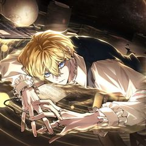
카카오웹툰무한의 마법사
마굿간에 버려져 평민으로 키워진 아이, 시로네. 타고난 통찰력으로 글까지 깨우친 아이는 도시로 나간 어느 날 그토록 궁금해하던 마법을 경험한다. 그 길로 마법사를 꿈꾸게 된 시로네. 하지만 신분의 장벽이 두터운 이 곳은 아이에게 냉혹하고, 그는 채 어른이 되기도 전에 이 세상의 이면을…
미스터리학원물성장물카카오웹툰에서 보기 → -
2
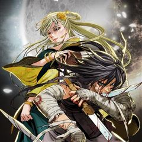
-
3
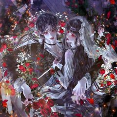
카카오웹툰세이렌: 악당과 계약 가족이 되었다
아리아는 계약 결혼을 제안했다. 그것도, 악마에게 영혼을 팔았다는 발렌타인의 대공자에게. 자신을 지키고, 그를 지키기 위해서. [나와 결혼해.] 아리아는 단풍잎 같은 손으로 쪽지와 함께 혼인 서약서를 내밀었다. [계약 결혼이니까 10년 뒤에 이혼…….] 그러자 어린 대공자는 쓰고 있던…
로판회귀카카오웹툰에서 보기 → -
4
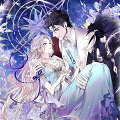
카카오웹툰너에게 빼앗을 왕관
내 평생을 바쳐 사랑한 사람. 그러나 사랑이라 믿었던 것은 배신이었고, 왕이었던 오라비는 나의 무지로 인해 죽었으며, 조국은 소리 없이 처참히 무너졌다. “다시… 돌아왔어.” 하지만 이번 생은 다를 것이다. 숙부에게 주어졌던 영광은 전부 빛을 잃을 것이며, 남편이 바랐던 찬란한 왕관은…
로판복수극카카오웹툰에서 보기 → -
5
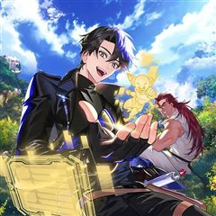
카카오웹툰SSS급 죽어야 사는 헌터
F급 말단 헌터 ‘김공자‘. 랭킹 1위 ‘염제‘를 부러워하던 어느 날, 무려 S+급 스킬을 얻는다. 하지만 기쁨도 잠시, 어째 스킬 내용이 이상하다?! 상대의 스킬 중 1개를 복사한다,까지는 좋은데… "뭐? 내가 죽어야만 발동된다고?!" 죽어야 사는 헌터의 인간찬가 <SSS급 죽어야…
눈물샘자극학원물회귀카카오웹툰에서 보기 → -
6
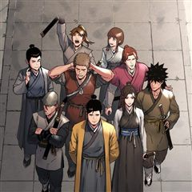
카카오웹툰군림천하
"너만은 꼭 군림천하 해야 한다!” 그 한마디로 진산월의 운명이 결정됐다. 스물세 살, 그는 종남파의 장문인이 되었다. 남은 이들은 단 8명의 제자뿐. 한때 천하제일을 꿈꿨지만, 지금은 명맥만을 잇는 문파. 사부의 유지를 위해, 살아남기 위해— 진산월은 비정한 강호로 나아간다.
자극적인성장물액션카카오웹툰에서 보기 → -
7
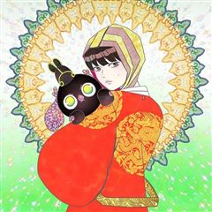
카카오웹툰수린당 성군전
[수린당 성군전] 선계와 인간계를 이을 단 한 명의 성군, ‘한울’. 지덕체를 두루 갖춘 완벽한 아이의 탄생에 선계의 신들은 신이 났다. 그것도 아주 지나치게! 과도한 기대는 때론 독이 될 수도 있는 법. 한울이를 금쪽이가 되지 않게 밝고 바른 아이로 키울 수 있을까? 성군의 운명을…
힐링카카오웹툰에서 보기 → -
8
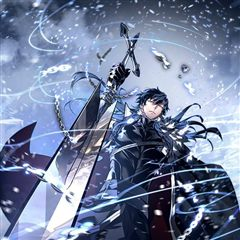
카카오웹툰회귀검가의 서자가 사는 법
강자존의 가문 라그나르의 서자 테오, 죽도록 노력했지만 재능이 부족하여 혈통의 사슬을 끊지 못하고 결국 왕좌경쟁에 밀려난다. 하지만 힘없는 서자 임에도 형제들은 테오를 제거하려 하였고 자신을 가르쳤던 스승에게 마저 배신당한 테오는 모든걸 잃어버리고 죽음을 맞는다. 최후의 순간, 삶의…
사이다학원물회귀카카오웹툰에서 보기 → -
9
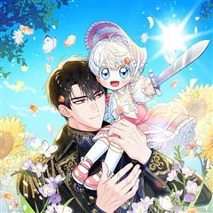
카카오웹툰막내가 뭔갈 많이 숨김
마법사 소년병으로 개고생하던 전쟁터에서 전생의 기억이 떠올랐다. 그리고 이곳이 <폐허 위에 꽂은 검> 소설 속이라는 것도. 하필이면 종말의 몰살엔딩이 예정된 전쟁 소설 속에 빙의했냐고!! 끔찍한 결말을 피하자면 ‘영웅’ 레비아탄 제베르트 옆에 딱 붙어 그가 죽지 않도록 잘 감시해야 한…
힐링로판육아물카카오웹툰에서 보기 → -
10
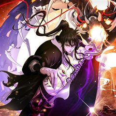
카카오웹툰낭선기환담
호랑이로 환생하여, 영물이 되어 살아가던 산의 주인 산군. 평화롭게 살아가던 산군의 앞에 한 소녀가 찾아오게 된다. 대뜸 지아비로 모시겠다고 하는 소녀. 귀찮은 산군은 그녀를 내쫓으려고 하지만, 그녀는 돌아갈 곳이 없다. 결국 소녀를 거두기로 결심한 산군. 그런 그에게 수많은 위협이…
액션환생카카오웹툰에서 보기 → -
11
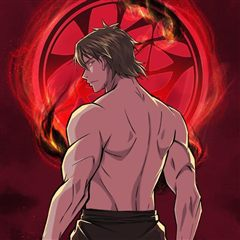
카카오웹툰대사형 선유
삼류 낭인 곽노의 손에 거둬진 아이들. 사제관계를 맺고 아이들은 어설프게나마 무공과 보법 수련을 하며 각자의 꿈을 꾼다. 먹고살기 위해 곽노는 늘 자리를 비워야 했고, 아이들 중 맏이인 선유는 사제들을 돌봐야 한다. 그는 대사형大師兄이다.
눈물샘자극액션가족카카오웹툰에서 보기 → -
12
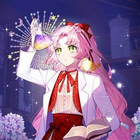
카카오웹툰이상한데 효과적인 악녀 생활
제국의 최고 명문 프렐라이 공작가의 막내 손녀이자 천재 마법 공학 박사인 키아나 프렐라이. 콩가루 집안에서 가출한 후 촌구석 상아탑에 처박혀 논문 찍는 기계처럼 연구에 매진한 지 7년. 갑자기 들이닥친 군사들에 의해 제국으로 끌려갔다. 아니, 할아버지가 역모를 꾀했다고?!!! 교수형…
개그로판회귀카카오웹툰에서 보기 → -
13
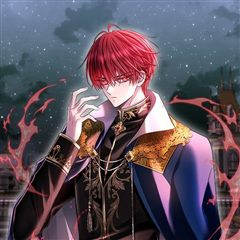
카카오웹툰블랙 헤이즈
오래전, 다른 세상과 통하는 「문」이 열리고 「표식」과 함께 특별한 능력을 얻은 자들을 「마법사」라 부르기 시작했다. '그날'의 사건 이후 큰 유명세를 치르고 있는 오피온의 1급 마법사 「블로우」. 어느 날, 아주 특별한 의뢰를 받게 된다. 그것은 바로 「마법 학교 헬리오스」에서 '괴…
학원물카카오웹툰에서 보기 → -
14
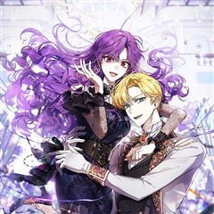
카카오웹툰악녀라서 편하고 좋은데요?
"악녀라서 뭐? 편하고 좋기만 한데?" 2020년 카카오페이지 올해의 웹소설 <악녀라서 편하고 좋은데요?> 웹툰으로 화려하게 다시 태어나다! 은수저X, 금수저X :+: 오리하르콘 수저 :+: 악녀로 빙의한 윤도희 180,000,000도 인생 역전에 성공한다. 소심한 본체 그렇지 못한…
사이다로판빙의카카오웹툰에서 보기 → -
15카카오웹툰
템빨
[신영우 (유저 네임: 그리드)] 세계 최고의 가상 현실 게임 <SATISFY>. 현실에서나, 게임 속에서나, 불운은 항상 그의 곁을 맴도는데.... 퀘스트 수행 중 우연히 발견한 게임 속 로또, '파그마의 기서'. 20억 명이 넘는 유저 중 유일한 최강의 레전드리 직업으로 전직. "…
사이다학원물게임판타지카카오웹툰에서 보기 → -
16
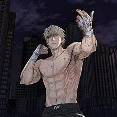
카카오웹툰가드패스
평소 먹는 것을 좋아해 뚱뚱하고 큰 체격을 가진 '임세준'. 그는 뚱보라는 놀림에도 신경 쓰지 않는 자존감이 높고 확고한 성격을 가졌다. 그에게 단 한 명의 친구 '서하진'. 그녀는 어릴 적부터 세준을 지켜주기 위해 늘 운동을 배워왔다. 어느 날 세준은 같은 반 일진과 트러블이 생기고…
사이다학원물배틀카카오웹툰에서 보기 → -
17
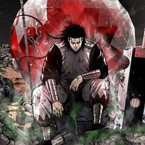
카카오웹툰레드스톰 - 왕의 귀환
피에 젖은 사막. 붉은 사막을 용납할 수 없던 한 소년. 소년은 사막의 무신이 되어 사막을 구하지만 이제는 세계가 피에 젖으려 한다. 무신은 이제 사막을 넘어 세계를 구하려 한다. “4년 만에 돌아온 그로우, 왕의 귀환. 이제는 사막에서 전쟁을 보여줘야 할 때다.”
액션성장물카카오웹툰에서 보기 → -
18
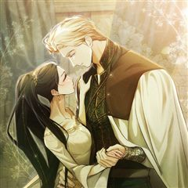
카카오웹툰타람 타람 타람
나긋나긋한 움직임으로 들어온 다온이 연회장 중앙에서 멈춰 섰다. 인형만큼이나 무미하고 감정 없는 얼굴이었다. 그럼에도 도도하고 우아해서 얼음 여왕처럼 강렬한 인상을 주었다. 엑서는 다리를 꼬며 낮게 웃었다. “지배자로서, 오늘 밤 널 안겠다.” 운명적인 첫 만남. 한눈에 반해버린 여자…
눈물샘자극설렘폭발로판시대물카카오웹툰에서 보기 → -
19
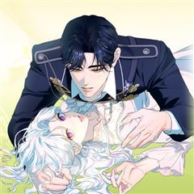
카카오웹툰황제와 비밀 연애 중인데 나는 그걸 몰라
전쟁광 폭군이 햇살캐 성녀 여주와 사랑에 빠지는 로판 속, 원작 줄거리와 전-혀 상관없는 엑스트라로 환생한 '캐롤리나'. 세기의 로맨스보다 내일의 야근 여부가 더 중요한 소시민 리나의 평범한 일상에도, 어느 날 운명처럼 빛나는 외모의 남자친구가 찾아왔는데... ...그땐 몰랐다. ".…
설렘폭발로판로맨틱코미디카카오웹툰에서 보기 → -
20카카오웹툰
닥터 최태수
대학병원의 가장 말단 의사, 걸어다니는 깡통― 인턴. 하루하루, 인턴으로서의 고된 나날을 보내던 최태수는 우연히 세계최정상의 흉부외과의사인 '리처드 카프레네'의 임종을 지키게 된다. 이때, 놀랍게도 카프레네의 모든 의학지식이 고스란히 최태수에게 전이되는데…!! 따뜻한 심장을 지닌 천재…
눈물샘자극공감힐링카카오웹툰에서 보기 → -
21카카오웹툰
남궁세가 손녀딸의 귀환
혈마의 소교주 일화는 스승인 혈마의 뜻에 따라 남궁세가를 멸문시키지만, 혈마의 배신으로 인해 죽음을 앞두고 충격적인 이야기를 듣는다. “이제 천하에 남궁은 너 하나 남았다.” 일화는 자신이 남궁세가에서 오래전에 잃어버린 아이 ‘설화’였고, 간악한 혈마의 수작질을 위해 키워졌단 걸 알게…
로판회귀카카오웹툰에서 보기 → -
22
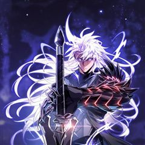
카카오웹툰픽 미 업!
그 누구도 던전의 끝까지 오르지 못한 극악의 난이도를 자랑하는 모바일 가챠 게임 <픽 미 업!(Pick me up!)> 마스터 오브 마스터라 불리는 세계 랭킹 5위의 마스터 '로키'는 던전을 깨던 중 정신을 잃게 된다. 깨어나 보니 레벨도 1, 등급도 1성인 <픽 미 업!> 속 영웅…
사이다액션게임판타지카카오웹툰에서 보기 → -
23
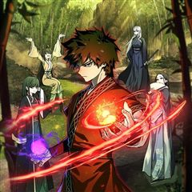
카카오웹툰천하제일인의 소꿉친구
정파를 배신하고 천마 휘하의 마인이 되어 버린 구양천. 마인으로서 살아가며 천마의 명으로 본인의 의지와는 상관없이 수많은 악행을 저지르고 후회로 점철된 인생을 살아가게 된다. 천마가 일으킨 정마대전. 정파의 삼존 존재마저 무릎을 꿇린 천마를 베어낸 위설아로 인해 길고 길었던 지옥 같은…
액션하렘카카오웹툰에서 보기 → -
24
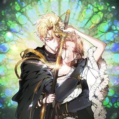
카카오웹툰그 악녀가 검을 든 이유
“마님이 전해달란다. 곧 네 가족들도 네 뒤를 따라가게 될 거라고.” 새어머니의 오랜 학대와 모함 끝에 살해당했다. 모든 게 끝이라고 생각했건만 두 번의 환생 후 원래의 나, 희대의 악녀로 알려진 '에린 리서스'로 회귀하게 되었다. 모든 걸 잃고, 사랑하는 사람마저 떠나보내기 전으로.…
미스터리로판복수극카카오웹툰에서 보기 → -
25
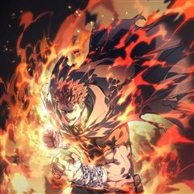
카카오웹툰권왕전생
인간들이 이종족을 노예로 부리는 세상. 대마도사 '레펜하르트'는 이종족들을 돕는다는 이유로 인간들에게 마왕 취급을 받는다. 마왕을 토벌하기 위해 온 용사 일행! '레펜하르트'는 그에 맞서 용사 일행에게 큰 피해를 주는 것에 성공하지만, 결국 권왕 '테스론'에게 죽임당할 위기에 처하는데…
학원물성장물카카오웹툰에서 보기 → -
26
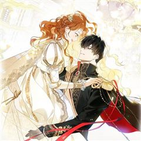
카카오웹툰이번 생은 가주가 되겠습니다
“…한번 해 보자. 내가 가주가 되는 거야.” 제국에서 제일가는 가문, 롬바르디의 사생아로 환생한 피렌티아. 게다가 이 가문은 막대한 부는 물론 외교와 문화까지 통달한 말그대로 제국의 역사 자체! 금수저 오브 금수저 인생 당첨! 앞으로는 탄탄대로일 거라 생각했는데…. 아버지는 돌아가시…
사이다로판회귀카카오웹툰에서 보기 → -
27카카오웹툰
슬프게도 이게 내 인생
"벌어먹고 살아야 하는 현생은 너무 힘들어!" 거친 현대사회에서 이리저리 치이며 어떻게든 적응해보려는 어리바리 슬이와 쉽지 않은 직장 생활에 약간 돌아버린 친구들의 슬프지만 즐겁게 살려고 노력하는 이야기
개그공감카카오웹툰에서 보기 → -
28
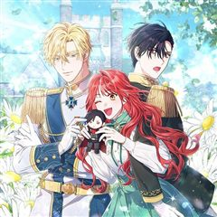
카카오웹툰결혼도 안 했는데 무슨 이혼인가요, 폐하
대륙의 절반이 들끓었던 영토 전쟁이 끝난 후로 십 년. 종전의 영웅, 아이작 메저린의 영지에 순금을 녹인 인장이 박힌 문서가 날아들었다. 아직 결혼도 안 한 외동딸 클리샤 메저린에게 보내온, 황제의 <이혼서>. 느닷없는 이혼으로도 미치고 팔짝 뛸 노릇인데, 황실 규범에 따라 10년간…
개그로판로맨틱코미디카카오웹툰에서 보기 → -
29
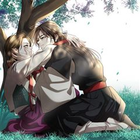
카카오웹툰비에 젖은 흔적들이다
그날 내가 잃어버린 것은 너일까, 나일까. 그리고 내가 다시 찾은 것은 나일까, 너일까. 아니면 우리일까. 14년 전 그날 홀로 남겨진 동경은 갈 길을 잃은 채 그 자리에 멈춰버렸다. 차가운 세상에 대한 믿음도 유대도 기대도 없다. 절망도 없다. 나조차도 없다. 껍데기만 어른이 되어버…
설렘폭발시대물카카오웹툰에서 보기 → -
30
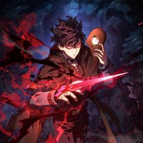
카카오웹툰철혈검가 사냥개의 회귀
바스커빌 가문의 사냥개 '비키르'. 사냥개로서 가문에 충성한 보답은 모함과 누명으로 얼룩진 단두대의 칼날이었다. "다시는 토끼를 잡고 나면 삶아지는 사냥개처럼 살지 않겠노라." 그런 그에게 죽음 대신 찾아온 뜻밖의 기회. 어둠 속에서 송곳니를 갈고닦는 비키르의 눈이 붉게 빛났다. "기…
학원물복수극카카오웹툰에서 보기 →